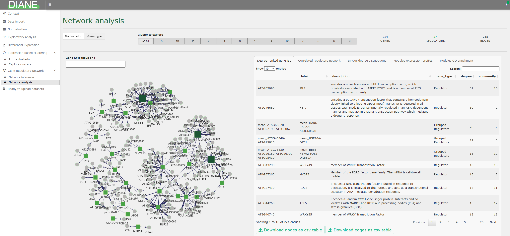

DIANE is a R-Shiny application for the analysis of high throughput gene expression data (RNA-Seq). Its function is to extract important regulatory pathways involved in the response to environmental changes, or any perturbation inducing genomic modifications.
Given the popularity of combinatorial approaches in experimental biology, we designed this tool to process, explore, and perform advanced statistical analysis on multifactorial expression data using state of the art methods. It includes :
Raw count data pre-processing and normalization
Differential expression analysis and results visualization (Volcano plots, heatmaps, Venn diagrams…)
Gene ontology enrichment analysis
Expression based clustering in the framework of Mixture Models, and individual characterization of those clusters (generalized linar models and GO enrichment analysis).
Machine learning based Gene Regulatory Network inference and interactive network analysis, community discovery, transcription factor ranking…
Session reporting and results to download at each step of the pipeline
Demonstration on a published dataset, and other ready to explore datasets on several organisms
All of the features in DIANE are accessible via a single page Shiny application that can be locally launched, or used online. Several versions of the application are available :

For users more familiar with R programming, all server-side functions in DIANE are exported so they can be called from R scripts. Those functions documentation can be found in the Reference, and are illustrated in the corresponding vignette
To cite DIANE in publications use:
Cassan, O., Lèbre, S. & Martin, A. Inferring and analyzing gene regulatory networks from multi-factorial expression data: a complete and interactive suite. BMC Genomics 22, 387 (2021). https://doi.org/10.1186/s12864-021-07659-2
A BibTeX entry for LaTeX users is
@Article{cassan2021Inferring,
title = {Inferring and analyzing gene regulatory networks from multi-factorial expression data: a complete and interactive suite},
author = {Océane Cassan and Sophie Lèbre and Antoine Martin},
journal = {BMC Genomics},
year = {2021},
volume = {22},
number = {387},
url = {https://bmcgenomics.biomedcentral.com/articles/10.1186/s12864-021-07659-2}}DIANE is built and tested on R 4.6.1, available for all OS at https://cloud.r-project.org/.
Download and install DIANE in your R console as follows (you need the remotes package installed install.packages("remotes")) :
remotes::install_github("Alexandre-So/DIANE")You can then launch the application :
In case your expression input file exceeds 5MB, you may need to run the command options(shiny.maxRequestSize=30*1024^2) before calling DIANE::run_app() to upload up to 30MB.
Once the application is launched, if the resolution poorly fits your screen, you can adjust it with the keyboard shortcuts ctrl + or ctrl - (use cmd on Mac).
Note for Debian and Ubuntu users : DIANE’s dependencies need a number of system libraries. Dockerfile.base holds the up to date list :
sudo apt-get install cmake gdal-bin jags libabsl-dev libcurl4-openssl-dev \
libgdal-dev libgeos-dev libgeos++-dev libglpk-dev libgmp-dev libicu-dev \
libproj-dev libsqlite3-dev libssl-dev libudunits2-dev libuv1-dev \
libxml2-dev make pandoc zlib1g-devThe build has two steps. Dockerfile.base installs R, the system libraries and every package DIANE depends on : about an hour, and only again when DESCRIPTION changes. Dockerfile.app adds DIANE on top in about a minute, as one of two variants — public, self-contained, or server, which serves a directory you mount.
build.sh drives both, and checks the machine before it builds anything. ./build.sh --check runs the checks alone.
Install the Docker engine as described in the Docker docs, then :
git clone https://github.com/Alexandre-So/DIANE.git
cd DIANE
./build.sh --base./build.sh --public
docker run --rm -p 8086:8086 diane:1.3-publicDIANE is then at http://localhost:8086, with the organisms bundled in the package.
./build.sh
docker run -d --rm --cpus 16 -p 8086:8086 \
-v /path/to/DIANE/:/srv/shiny-server/ \
-v /path/to/logs/:/var/log/shiny-server/ \
diane:1.3/path/to/DIANE/ is the clone on the host, the directory holding app.R./path/to/logs/ is where shiny-server writes its logs.-p 8086:8086 is the port ; change the first number to serve on another one.--cpus 16 is how many cores one session may use, --memory 8g caps its memory.-d detaches the container, --rm removes it when it stops.The application runs as the shiny account of the image, set by run_as in shiny-customized.config, so do not pass --user. Give that account read access to the served directory, and write access to its logs/ :
docker run --rm --entrypoint sh diane:1.3 -c 'id shiny'
chmod -R a+rX /path/to/DIANE
chown -R <uid>:<gid> /path/to/DIANE/logsMount the dataset over the served directory :
docker run -d --rm -p 8086:8086 \
-v /path/to/DIANE/:/srv/shiny-server/ \
-v /path/to/dataset/data/:/srv/shiny-server/data/ \
-v /path/to/dataset/inst/extdata/organisms/:/srv/shiny-server/inst/extdata/organisms/ \
-v /path/to/logs/:/var/log/shiny-server/ \
diane:1.3Mounting data/ replaces the whole directory, so the dataset must also carry abiotic_stresses.rda, gene_annotations.rda and regulators_per_organism.rda.
./build.sh --check --data-dir /path/to/dataset checks all of this before building.
Behind ShinyProxy, the same mounts go into application.yml as container-volumes, with container-cpu-limit and container-memory-limit.
Copyright (C) 2020 Oceane Cassan
This program is free software: you can redistribute it and/or modify it under the terms of the GNU General Public License as published by the Free Software Foundation, either version 3 of the License, or (at your option) any later version.
This program is distributed in the hope that it will be useful, but WITHOUT ANY WARRANTY; without even the implied warranty of MERCHANTABILITY or FITNESS FOR A PARTICULAR PURPOSE. See the GNU General Public License for more details.
You should have received a copy of the GNU General Public License along with this program. If not, see http://www.gnu.org/licenses/.
Authors of the published work : Océane Cassan, Antoine Martin, Sophie Lèbre.
The application is now maintained by Alexandre Soriano (CIRAD)